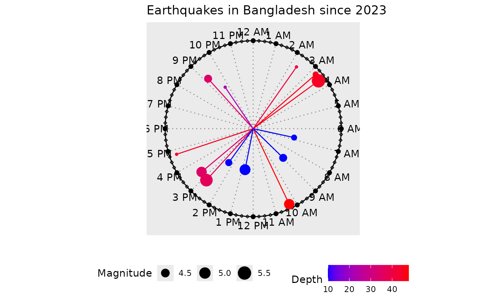

Clock Chart, Length and Color Modified by Numeric Variables
clock_chart_qnt.RdThis function will plot time of events on a 24 hour clock to show which events took place at what times. The length and color of the hands are modified according to a numeric vector.
Arguments
- data
A data frame
- time
Time in 24 hours HH:MM:SS format in the data set (19:30:01, for example)
- len
The numeric vector by which hands will be modified and colored.
- Col
The color of line segments and points.
- high
The color name for the high values. The default is
red- low
The color name for the high values. The default is
green. The color names can be vice versa or other colors, depending on the context. To use a single color for all lines, use same value forhighandlow
Details
Change the title, subtitle or the caption of the plot with
ggplot2::labs() .Change the legend title by adding
ggplot2::labs(color = "TITLE"). Add
or modify legend by theme(legend.position = "POSITION"); the valid
postion names in ggplot2 are top, bottom, right, and left,
excluding more complex options.
See also
clock_chart_col() for coloring by a numeric variable,
clock_chart_qlt() for coloring by a qualitative variable,
clock_chart_len() for modifying length by a numeric variable,
clock_chart() for the simplest clock chart
Examples
p1 <- clock_chart_qnt(data = bdquake, time = hms, len = depth,
Col = mag, high = "red", low = "blue")
p1 + ggplot2::labs(color = "Depth", size = "Magnitude",
title = "Earthquakes in Bangladesh since 2023")
